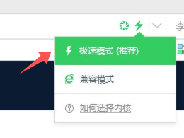

<!DOCTYPE html><html><head><meta charset=utf-8><meta name=viewport content="width=device-width,initial-scale=1"><title>搜股XPE 您的专属投资大管家</title><meta name=”Keywords” content=X-PE,xpe,投资管理,股权投资,投后管理,尽职调查,舆情监控,高管征信><meta name=baidu-site-verification content=39mN52dXg3><meta name=”Description” content=搜股X-PE，是一款针对PE机构的“融”、“投”、“管”、“退”四大业务板块的智能管理系统。系统包含PE机构终端、被投公司管理终端、LP信息终端三个信息互通的终端，并同时实现了WEB网页和APP移动端两种展现方式。全面满足PE机构的项目管理、基金管理、内部OA三大日常管理需要。让您的私募股权投资管理轻松、高效、安全、智能。><link rel="shortcut icon" href=./static/favicon.ico><link rel=bookmark href=./static/favicon.ico><!--[if lte IE 9]><div style="text-align:center "><h1 style="font-size:32px;color:#35383A;line-height:1em;font-weight:bold;margin-bottom: 16px;margin-top: 100px;">你的浏览器版本太低了，请升级你的浏览器</h1><h2 style="font-size: 16px; color: #35383A;line-height: 29px;margin-bottom: 13px;font-weight: normal">推荐使用：谷歌、火狐、或其他双核浏览器极速模式<br>如果您使用的是360、搜狗、QQ等双核浏览器，请在最顶部切换到极速模式访问</h2></div><![endif]--><link href=/static/css/app.da9cea6cf45462978ce928815548e728.css rel=stylesheet></head><body><div id=app></div><script type=text/javascript src=/static/js/manifest.f631679f2d32f6dd1f31.js></script><script type=text/javascript src=/static/js/vendor.ab5ca1f15483a2cad84c.js></script><script type=text/javascript src=/static/js/app.a9fab8b7c7f9449b1574.js></script></body><script src=https://cdn.bootcss.com/tinymce/4.7.4/tinymce.min.js></script></html>